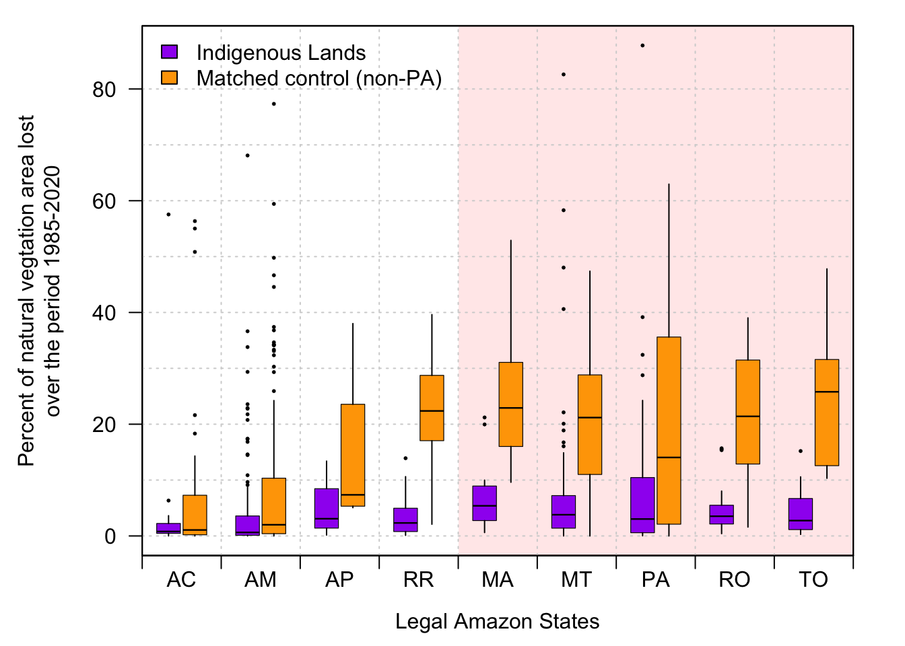
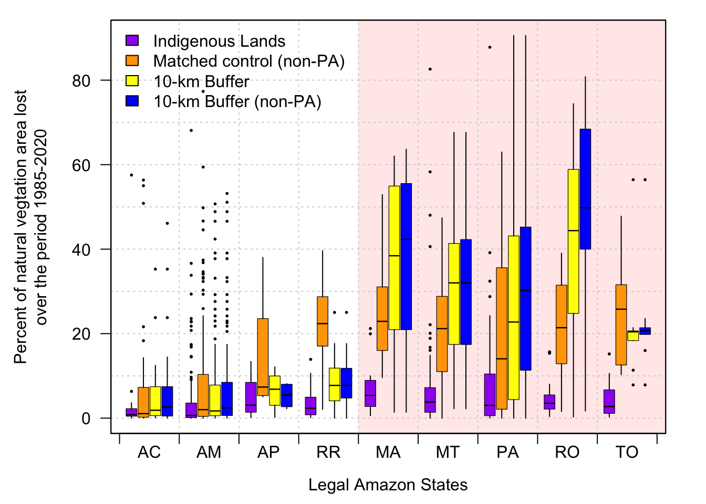

Update 2 terra indigena
Edgar Cifuentes
05/10/2022
Here are some updates after getting the layers for the matching analysis.The main aim here is to modify Fig 5 which compares ILs with their buffers, but instead compare ILs with controls from the matching analysis. In the original analysis, buffers excluded neighboring ILs, but the reviewers suggested to also exclude Protected Areas (PAs). Then, besides preparing and extracting the data for the matching pairs (IL-controls), data for each buffer was extracted again but now excluding PAs.
Data preparation
Layers from mapbiomas (collection 3 and 6) and relevant variables (ie, accessibility to cities, distance to roads, human population density, biome type, and PAs) were resampled to 1-km resolution images masked for the ‘legal Amazon’. Then, data for each 1-km grid (ie, pixel) was extracted for all layers excluding PAs and selecting only the the pixels having 80% of natural vegetation cover at the start of the time period (ie, 1985). Natural cover was calculated from the re-classified transitions shown in the previous tab. Since we are using transition layers of mapbiomas (not the land cover layers), natural vegetation cover is the sum of two transitions: what remained natural plus what was transformed from natural. Then, natural vegetation cover in each 1-km pixel was divided by its area (which varies slightly from 1) to get the proportion.
\[ {Proportion\ of\ natural\ land} = \frac{transformed + remain}{area} \]
In the case of buffers, mapbiomas data was extracted again for each of them. Then, there are data for two types of buffers:
only excluding neighboring ILs, as in the original methodology.
excluding PAs as well.
An important difference now compared to the original methodology, is that the basic data units are pixels, even though they’re aggregated after for each IL and its respective matching control plus buffers. Therefore, only the pixels having 80% of natural cover were selected (and aggregated after). In the previous analysis, mapbiomas data were not extracted by 1-km pixels but to the whole IL and buffers.
When excluding PA pixels, some ILs and/or buffers were filtered out as some PAs overlap completely (or partially). There are ILs completely surrounded by PAs and/or other ILs, so the whole buffer would not have any data. When selecting only 80% cover pixels, some other ILs get excluded as well.
In summary:
## IL pixels excluded by PAs:
## 10 %## IL pixels excluded by PAs and 80%:
## 13 %## Buffer pixels excluded by other ILs:
## 73 %## Buffer pixels excluded by other ILs and PAs:
## 80 %Note that working with buffers can be problematic because a great fraction of IL borders are tangent to another IL. More than 2/3 of buffer area is excluded by other ILs. Also note that PAs only excludes 7% extra in buffers. Inside ILs, PAs overlap 10% of ILs.
Matching analysis
After filtering out pixels in PAs and having less than 80% cover, the matching analysis was performed. This analysis ‘matches’ each IL pixel to another pixel outside the IL having similar characteristics (controls). The characteristics (ie, variables) we used were:
accessibility to cities
distance to roads
human population density
biome type
In general, the matching analysis performed well. Further explanation can be found in the SI draft document for matching: https://docs.google.com/document/d/1TWO7DNBtaVaVz-APYbrcHKF55ObNhmby.
Aggregates by IL
Mapbiomas data were aggregated for each IL, its respective matched control and its buffers. The response variable in each of them, is the proportion of natural vegetation loss, which is calculated as in option 1 in previous Update tab (see the very top of this website):
\[ {Percentage\ of\ natural\ vegetation\ loss} = \frac{transformed} {transformed + remain} *100 \]
Figure 5: boxplots
This is the original figure:

Data was extracted from mapbiomas collection 3 (same as the original methodology, up to 2017) and collection 6 (up to 2020). Besides having data for both collections, there are three options for this figure:
Option 1
Add another panel comparing ILs and their controls, but I’m less convinced with this option because IL boxplots are not same as the original figure (see above) because all of the exclusions (ie, PAs and 80% cover).
Collection 3
Collection 6

Option 2
- Replace the figure with a new one having ILs, controls, and buffers:
Collection 3
Collection 6

Option 3
Any other suggested.